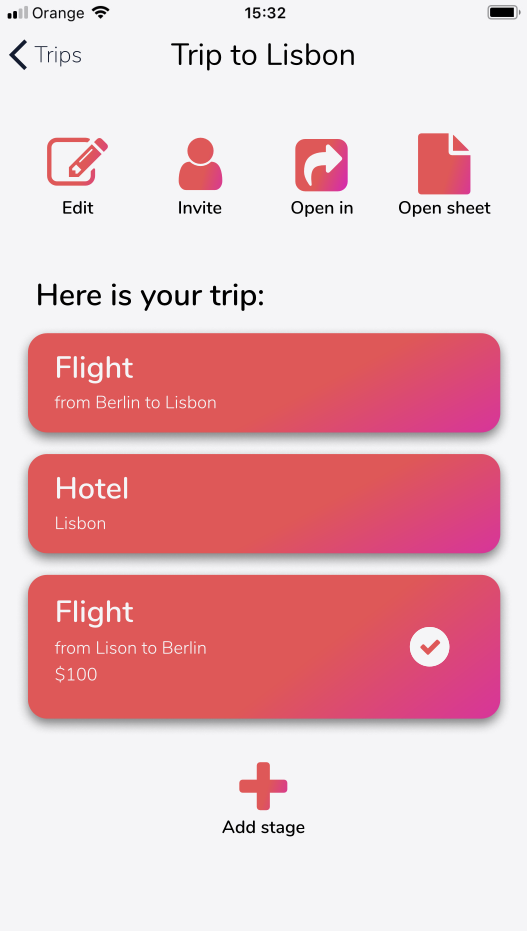

Travello
A solution to major problems that arise when planning trips in larger groups. Communication, keeping track of proposals and choosing best options become difficult in groups larger than three people. Even with three or four people planning the trip, keeping up with everybody’s opinion on proposals from different stages of the trip can be tricky.
Summary
This will be a summary (this) of a summary (this webpage) of a report (right here), so I will keep it short.
I followed a somewhat repetitive process to improve on the design. First, I conducted a semi-structured interview as a needs assessment study and synthesised the information with affinity notes. Then, I created some personas, some scenarios and some sketches. After that, I wrote down the design goals and got to work on wireframes, which later became a lo-fi prototype. I tested the prototype with two participants and came up with the key findings. Then, I created a mid-fi prototype and conducted a heuristic evaulation. After that was done, I tested the prototype on 5 people and implemented the key findings.
Design problem
At first, I thought about a fairly general solution for keeping track of proposals in any situation, such as looking for an apartment, choosing a new pair of trousers or travelling. However, such a solution needs to be quicker than a spreadsheet, it needs to add onto the experience of manually adding data into cells. That is why I decided it should be specialised for trips. This would narrow the scope of sites and services used to travel-centric and automatic data extraction from a link would be possible (because the developer would have time to really adjust the service to a couple of services).
Competitive analysis
I looked for any solutions that would involve any form of organisation in travel. I searched through different search engines, but also looked for articles that point out the best methods for planning a trip.
I found that there are no services that strictly meet the criteria for a group to work together on creating a trip plan. There are solutions for keeping track of booked hotels, flights and car rentals, but these help in organising what had already been booked. Only Mobili, an app, came close with their ability to share itineraries with a specified group.
Needs finding study
I conducted a semi-structured interview with 5 people recruited from my friends. At this stage I focused on deciding whether what I saw as a problem was really other people viewed as a challenge and whether they had already found other solutions for such problems. I interviewed 5 people with different characteristics in regard to their travel habits. After that, I used affinity notes to get out the most important infromation.
I learnt that participants are largely satisfied with their current solutions to plan trips in groups. However, there are situations in which communication tools are not enough such as choosing dates that fit everyone’s schedule and possible flights or other transportation. Additional problems include counting costs, keeping track of money due, deciding in a disengaged group, voting on proposals and checking compatibility between dates and hours of subsequent stages. Even though these are problems that the users see, adapting a new tool for a large group has a high barrier of entry, which means it is not likely.
Sketches, personas and scenarios
Using the needs identified in the needs finding study and the opportunities that came up in the competitive analysis, I drew 20 sketches, created 3 personas and 3 scenarios.
The sketches were supposed to be heavily exploratory, because there were many points of the design that could have been prioritised - like costs or fitting time constraints.
The personas I created were heavily based on the participants I interviewed during the needs assessment study. I decided this would be the safest approach because the participants represented the intended user base well and I would not introduced much bias.
The scenarios were written (also drawn, but they don't deserve an online life) and closely tied to the personas and outlined the situations in which Travello should be useful. I used the scenarios in creating the design goals to outline any rough edges of the design (for example the tidiousness of going back and forth between the browser and Travello).
Lo-Fi prototype and micro-usability test
Taking into consideration the design goals that emerged from previous steps I decided on a web app based on login links (no need for an account).
I used Figma to create an interactive set of wireframes. I chose a layout and went a little bit out of the range of lo-fi wireframes to be certain that my wireframes can communicate the intention during the micro-usability test.
The micro-usability test was conducted with the help of two female participants both 21 years old with more than two trips planned in the year of the interview. I presented the prototype on my phone with the Figma Mirror app which allows presenting an interactive prototype. I recorded the test with another phone and interviewed the participants briefly afterwards. The goal of this test was to see if the information architecture and general working of the service is easily understood.
Although the test went generally well, there were many aspects of the prototype that were not clear to the participants - most importantly the trip-stage-proposal (at this time proposals were called 'options'). I focused on the key findings from this test when creating the mid-fi prototype.
Mid-Fi prototype and heuristic evaluation
The main design goals for the prototype were clarity and low barrier of entry. This follows from the micro-usability test, where the architecture was not easily understood, and needs assessment study, where the participants admitted that groups are not willing to change.
I also focused on improving the design in the areas it did not do well in the micro-usability test and on making it simplistic as well as usable.
The key tasks of the new prototype included:
- editting trips and adding new ones,
- voting on proposals and adding them simply through outside links,
- sharing trips via links,
- opening Travello as a chatbot in other apps,
- creating a simple spreadsheet for manual data.
I evaluated the design afterwards using 10 usability heuristics by Jakob Nielsen. The main issues that came up during the evalution were:
- lack of system status on some screens (Violation of "Visibility of system status"),
- no redo or undo buttons (violation of "User control and freedom"),
- no help and documentation (violation of "Help and documentation") - although this would come later in the design.
Hi-Fi prototype
The hi-fi prototype was not far from the one used in the final users test. The design did well in the System Usability Scale questionaire (it received a score of 78, where 68 is a standard) and most of the participants had problems with the task descriptions or because the prototype did not anticipate their actions (even though the design was inteded to do so, so the final product would do fine).
The main differences were making windows and buttons more consistent and giving the option buttons less priority by getting rid of their background. This way options do not dominate the rest of the screen.
The whole final prototype can be found here.
What I learnt from my mistakes
Now the most improtant part. This was my first full-fledged project in UXD, which means I had a lot to learn from my mistakes. These are the most important of them:
- I should have included accessibility as one of the design goals and when creating personas as well as scenarios. I read much more about including universal design in the process and now regret I did not do so,
- making the prototype in Figma is hard as there is no keyboard input possible. To make the prototype more natural, one should make participants click on text areas to enter pre-set text,
- timing and scheduling the design process is hard and much more time should be given for specific processes (such as implementing findings from heuristic analysis before user testing).